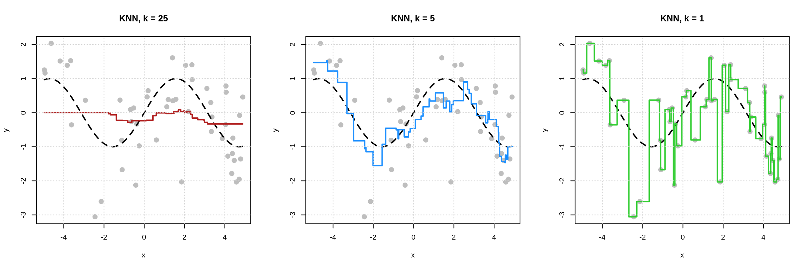

Chapter 5 Regression Overview
This chapter will provide an overview of the regression concepts that we have learned thus far. It will also serve to outline the general concepts of supervised learning which will also apply to our next task, classification.
Specifically, we’ll discuss:
- A review of the key concepts introduced thus far.
- Overfitting, underfitting and how to identify when they occur.
- The no free lunch concept as it applies to machine learning.
- The curse of dimensionality and how it influences modeling decision we make.
This chapter is currently under construction. While it is being developed, the following links to the STAT 432 course notes.
5.1 The Goal
What is the goal of regression models in the context of machine learning? We can discuss it in two ways:
- Make predictions on unseen data.69
- Estimate the regression function, which under squared error loss is the conditional mean of \(Y\), the response, given \(X\), the features.
These goal are essentially the same. We want to fit a model that “generalizes” well, that is, works well on new data that was not used to fit the model. To do this, we want to use a model of appropriate flexibility so as not to overfit to the training data. In other words, we want to train a model that learns the signal, the regression function, and not the noise, the random variation in the training data.
In previous chapters we have formalized this goal a bit more mathematically, but for a general recap, we stick to more casual language.
5.2 General Strategy
How do we find and train models that generalize well to unseen data? We generally follow these steps.
- Split the data in to training data and testing data.
- Within the training data, we will do whatever we want.
- The testing data will never be used to make any decision that lead to the selection of a model.
- We often use 80% of the available data for training.
- Split the training data into estimation data and validation data.
- We often use 80% of the available data for estimation.
- Decide on a set of candidate models.
- For parametric models: We assume a form of the model up to but not including the model parameters.
- For nonparametric models: We pick feature variables to be used and possible values of any tuning parameters.
- Fit (train) each candidate model on the estimation data.
- Evaluate all candidate models fit to the estimation data based on their performance on the validation data.
- Performance here is based on the ability of the model to predict on the validation data which was not used to train the models.
- Select one of the candidate models based on the validation performance.
- Fit the chosen model to the entire training dataset.
- Estimate model performance using the test data.
Note that we are using the validation data to select a model, while the test data is used to estimate model performance.
5.3 Aglorithms
While there are many, many models that can be used for regression, we have focused on three “families” of models. We saw how each can be used to estimate the regression function. Importantly, each model family can be made more or less flexible to accommodate different datasets in order to find a model that predicts well.
We are possibly being a little loose with the way we use the term “model” here. It might be more helpful to think in terms of algorithms.
A supervised machine learning algorithm for regression takes as input:
- A dataset.
- Additional information such as tuning parameter values or the form of a parametric modeling technique.
A supervised machine learning algorithm for regression outputs:
- A fitted model. In particular, a fitted model that can be used to estimate the regression function which is used to make predictions.
So, to oversimplify: Algorithms take as input data and output a model. That model takes as input new data and outputs predictions!
5.3.0.1 Linear Models
Linear models are a family of parametric models which assume that the regression function is a linear combination of the features. For example, with a single feature \(x\), we could assume
\[ \mu(x) = \beta_0 + \beta_1 x + \beta_2 x^2 + \beta_3 x^3 + \ldots + \beta_9 x^9 \]
Here, the \(\beta\) coefficients are model parameters that are learned from the data via least squares or maximum likelihood.70
5.3.0.2 k-Nearest Neighbors
k-Nearest Neighbors models are a family of nonparametric models with a single tuning parameter, \(k\), the number of neighbors to use when estimating the regression function. We can also control which features are used when calculating distances, and how distance is measured.
5.3.0.3 Decision Trees
Decision Tree models are a family of nonparametric models with a number of tuning parameters, but most notably, cp, the “complexity parameter” which indirectly controls the number of splits used to create neighborhoods of observations. We can also control which features are used when considering splits.
5.4 Model Flexibility
The plot below shows how train and validation “error” change as a function of model flexibility.

The “error” in this plot could be any reasonable error metric used, for example, RMSE. While here we are specifically discussing estimation and validation error, we more generally are discussing an error metric calculated on the same data used to train the model (estimation) and an error metric calculated on data not used to train the model, for example the validation data.
The “line” and “curve” seen above are highly idealized, that is, you won’t see nice linear and quadratic trends in practice. However, you will see that training error decreases as model flexibility increases.71 On the other hand, often we will see that validation error first decreases, then increases as model flexibility increases.72 While the validation “curve” is idealized as a “smooth curve” that decreases then increases, in practice, it might be a bit more “jagged” just due to the random nature of the validation split.
How can we modify the flexibility of the models we have considered?
5.4.0.1 Linear Models
To increase the flexibility of linear models, add additional transformed features or simply add features.
For example a model that assumes a quadratic mean function
\[ \mu_1(x) = \beta_0 + \beta_1 x + \beta_2 x ^ 2 \]
is more flexible than a model that assumes a linear mean function
\[ \mu_2(x) = \beta_0 + \beta_1 x \]
The model that assumes a quadratic mean function can learn a linear mean function, but this added flexibility comes with a price. (Possible overfitting.)
Similarly, a model that assumes the mean function is a function of two features
\[ \mu_1(x) = \beta_0 + \beta_1 x_1 + \beta_2 x_2 \]
is more flexible than a model that assumes the mean function is only a function of one of these features.
\[ \mu_2(x) = \beta_0 + \beta_1 x \]
5.4.0.2 k-Nearest Neighbors
Given a set of feature variables, as \(k\) increases, model flexibility decreases.73
5.4.0.3 Decision
Given a set of feature variables, as cp increases, model flexibility decreases.74
5.5 Overfitting
Overfitting occurs when we have fit to not just the signal but also the noise. That is, a model performs too well on the training data.
Let’s take a look at this visually.

In each of the plots above, the dashed black curve represents the true mean function of interest, in this case,
\[ \mu(x) = \sin(x) \]
with points simulated about this mean according to a standard normal. That is, the noise is standard normal.
We see that the model with \(k = 1\) has fit far too well to the training data. The estimated mean function, seen in green, goes through each training point. That is, there is no training error. This model is too flexible and is overfitting. We have learned both the signal and the noise, thus this model will predict poorly on new data.
The model with \(k = 25\) has fits the training data poorly. The estimated mean function, seen in red, does not match the true mean function well. The points are far from the estimated mean function. his model is too inflexible and is underfitting. It has learned neither the signal not the noise.
The model with \(k = 5\) seems like a reasonable in-between. Doesn’t seem to be chasing noise. Seems to reasonably approximate the true mean function.
How do we assess over and underfitting in practice, when we don’t know the true mean function? We have to look at train and validation errors.
- Models that are probably underfitting: “Large” Train RMSE and a Validation RMSE larger than the smallest. The less flexible, the more probable the underfitting.
- Models that are probably overfitting: “Small” Train RMSE and a Validation RMSE larger than the smallest. The more flexible, the more probable the overfitting.

The further a model is to the left of this plot, the greater the chance it is underfit. The further a model is to the right of this plot, the greater the chance it is overfit.
5.6 Bias-Variance Tradeoff
Why does changing the model flexibility influence the predictive performance of these models? The bias-variance tradeoff.
As models increase in flexibility,
- bias is decreased
- variance is increased
And together, the MSE is equal to the bias squared plus the variance.
However, the rate at which the variance increases can be and generally is different than the rate at which the bias deceases. This is why we must validate our models. Essentially, by modifying the model complexity and validating the results, we are trying to find the right balance between bias and variance.
5.7 No Free Lunch
The no free lunch concept has some very specific formulations, but we will introduce the general idea as it is often applied in supervised learning:
No algorithm will outperform all other algorithms over all possible datasets.
So in theory: We cannot simply find one algorithm that we know will always be the best.
In practice: We must validate our models! While for a particular dataset, without going through the validation process we cannot know ahead of time what algorithm will perform best, later in this text when we get to more practical applications, we will nudge you towards some methods more than others.
5.8 Curse of Dimensionality
One topic that we have avoided is the issue of high dimensional problems, that is, data that contains a large number of features. Moving into very high dimensions brings an issue which is often called the curse of dimensionality.75 Stated very simply:
In high dimensions any particular datapoint has no “close” neighbors.76
Why might that be a problem? Well, because most nonparametric methods rely on using observations that are “close” to each other. “Nearest neighbors” is literally in the name of k-nearest neighbors! Parametric methods may be less effected, especially when we assume a form of the model that is close to correct, but later we will see methods that are better equipped to handle this issue.
Remember, we are looking for predictive relationships. We are not necessarily attempting to explain this relationship and we are certainly not going to attempt to make statements about causality.↩︎
Additionally, we could assume a conditional normal distribution with a constant variance, which would require estimating the \(\sigma\) parameters. This is not necessary to estimate the mean.↩︎
Again, this is essentially one of the few use cases for actually calculating training error, to verify this relationship as a sanity check.↩︎
Sometimes you might see only an increase or decrease which would suggest you need to also try additional models with more or less flexibility.↩︎
Note that adding and removing features does have an effect on model flexibility, generally adding flexibility with additional features, but there are situations where adding features will increase training error.↩︎
Note that adding and removing features does have an effect on model flexibility, generally adding flexibility with additional features.↩︎
Wikipedia: Curse of Dimensionality↩︎
In low dimensions, say \(p = 1\) all points live on a line, so in some sense they’re already close together. In “high” dimensions, say for examples \(p = 20\), there just a lot more “space,” so observations are much less likely to live “close” to each other. Note that in practice what is considered a “high” dimensional problem is based on the relationship between \(n\) and \(p\). With a big enough samples size, we can deal with large \(p\).↩︎